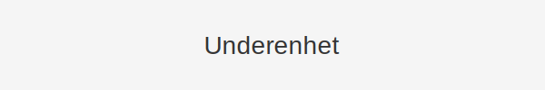
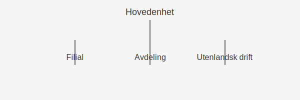

En underenhet er en del av en juridisk enhet som opererer under hovedenheten, ofte brukt for å organisere og rapportere regnskapsinformasjon for spesifikke deler av virksomheten. Underenheter kan være filialer, avdelinger eller andre organisatoriske enheter som har egne oppgaver, budsjetter og rapporteringskrav.
Underenheter registreres ofte i Enhetsregisteret når de oppfyller visse kriterier. De er også sentrale i både internregnskap og ekstern rapportering.
Hva er en Underenhet?
Underenhet er en organisatorisk eller juridisk avdeling av en hovedenhet (morforetak) som driver virksomhet med en viss grad av selvstendighet, men uten å være en selvstendig juridisk person.
Nøkkelaspekter ved underenhet:
- Organisatorisk del av hovedenhet
- Ikke egen juridisk person, men kan ha eget ansvarsområde
- Eget budsjett og regnskapsrapportering
- Registreringskrav ved visse omsetningsgrenser
Typer Underenheter
| Underenergtype | Beskrivelse |
|---|---|
| Filial | Et stedlig utsalgssted med adresse og egen drift |
| Avdeling | Intern divisjon med eget ansvar for produkter eller tjenester |
| Utenlandsk drift | Forretningsenhet i utlandet uten egen juridisk status |
Registrering i Enhetsregisteret
Underenheter må registreres i Enhetsregisteret hvis de har:
- Egen forretningsadresse
- Selvstendig regnskapsføring
- Fast virksomhet lokalisert utenfor hovedenhetens adresse
| Kriterium | Registreringskrav |
|---|---|
| Forretningsadresse | Ja |
| Egen regnskapsføring | Ja |
| Fast virksomhet | Ja |
Betydning for Regnskap og Rapportering
Underenheter gir detaljert innsikt i virksomhetens ulike deler og støtter:
- Kostnads- og lønnsomhetsanalyser per underenhet
- Budsjettkontroll og ansvarliggjøring
- Intern og ekstern rapportering med avviksanalyse
- Oppfyllelse av lovpålagte rapporteringskrav
Illustrasjon av Underenhetstruktur

Figuren viser hvordan en underenhet er plassert under hovedenheten med egne ansvarsområder.
Praktiske Råd for Håndtering av Underenheter
- Definer klare ansvarsområder: Spesifiser formål og rapporteringskrav for hver underenhet.
- Etabler budsjett og rapporteringsrutiner: Utarbeid egne budsjetter og maler for regnskapsrapportering.
- Sørg for korrekt registrering: Kontroller om underenheten skal registreres i Enhetsregisteret.
- Integrer i internregnskapet: Bruk underenheter for å segmentere analyser i internregnskapet.
Oppsummering
En underenhet er en viktig komponent i moderne regnskapsorganisering, som gir mulighet for detaljert analyse og styring av virksomhetens ulike deler. Riktig etablering, registrering og rapportering av underenheter sikrer både intern kontroll og ekstern etterlevelse.